linux基础服务管理
在学了linux基础命令后，下一步就是学习linux的各种服务配置，运维的日常，也就是使用linux命令作为基本功，去维护，操作各种服务配置，服务指的是各种应用程序。
比如以后会接触的web服务、数据库服务等。
但是我们先学习linux自带的一些应用程序，一个基础服务，是不需要你单独安装的，系统装好后，自带的服务，可以直接使用，来完成一些功能。那明显的，其他一些服务，就是需要我们额外安装的。
学习目标
1、了解systemctl命令用途
2、掌握使用systemctl开启，关闭，重启服务
3、了解常见自有服务ntpd,firewalld,crond的作用
4、掌握ntpdate时间同步原理与实现
5、掌握防火墙的相关操作（添加和删除简单规则，开启，关闭防火墙）
6、了解源码包和二进制包的区别
7、掌握rpm包的卸载、安装以及更新操作
8、了解计划任务的作用
9、掌握计划任务的编辑
一、自有服务概述
服务是一些特定的进程，自有服务就是系统开机后就自动运行的一些进程，一旦客户发出请求，这些进程就自动为他们提供服务，windows系统中，把这些自动运行的进程，称为"服务"
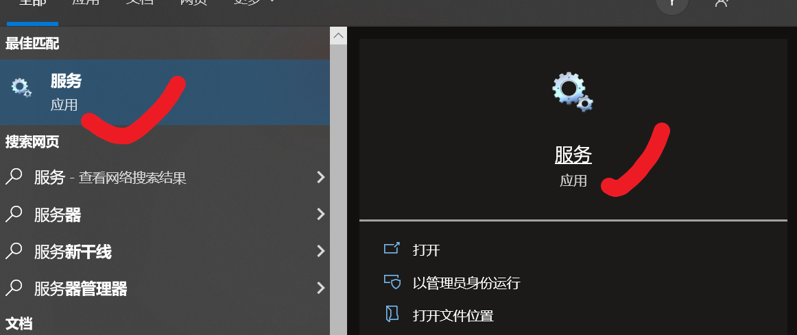
windows自带的各种服务
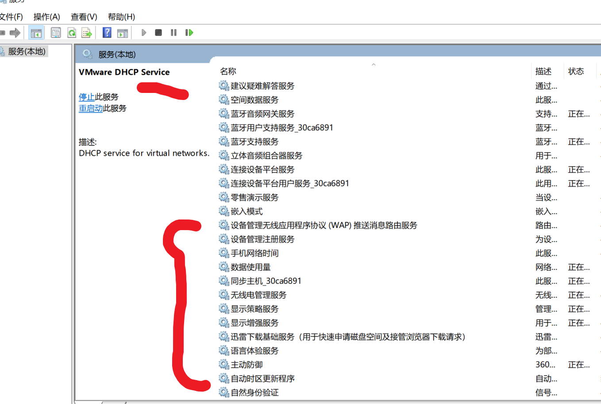
举例：当我们使用SSH客户端软件连接linux的时候，我们的服务器为什么会对连接做出响应？是因为SSH服务开机就自动运行了。
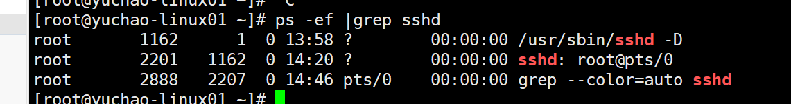
所谓自有服务，简单来说，可以理解为Linux系统开机自动运行的服务（程序）。
我们如何管理这些自有服务呢？
二、systemctl管理服务命令
在Centos7之前，通过service 和 chkconfig两个命令来管理服务
service: 负责启动，停止服务，显示服务状态
service命令用于对系统服务进行管理，比如启动（start）、停止（stop）、重启（restart）、重新加载配置（reload）、查看状态（status）等。
# service mysqld #打印指定服务mysqld的命令行使用帮助。
# service mysqld start #启动mysqld
# service mysqld stop #停止mysqld
# service mysqld restart #重启mysqld
chkconfig: 指定服务是否开机启动
提供了一个维护/etc/rc[0~6] d 文件夹的命令行工具，它减轻了系统直接管理这些文件夹中的符号连接的负担。chkconfig主要包括5个原始功能：为系统管理增加新的服务、为系统管理移除服务、列出单签服务的启动信息、改变服务的启动信息和检查特殊服务的启动状态。当单独运行chkconfig命令而不加任何参数时，他将显示服务的使用信息。
[root@localhost www]# chkconfig --list #查看系统程序列表
[root@localhost www]# chkconfig httpd on #将httpd加入开机启动
[root@localhost www]# chkconfig httpd off #关闭httpd开机启动
从Centos7开始，统一使用systemctl来管理服务， systemctl同时具有service和chkconfig命令的功能。
systemd命令
systemd 是目前 Linux 系统上主要的系统守护进程管理工具，由于 init 一方面对于进程的管理是串行化的，容易出现阻塞情况，另一方面 init 也仅仅是执行启动脚本，并不能对服务本身进行更多的管理。
所以许多 Linux 发行版都由 systemd 取代了 init 作为默认的系统进程管理工具。
systemd 所管理的所有系统资源都称作 Unit，通过 systemd 命令集可以方便的对这些 Unit 进行管理。
比如 systemctl、hostnamectl、timedatectl、localctl 等命令，这些命令虽然改写了 init 时代用户的命令使用习惯（不再使用 chkconfig、service 等命令），但确实也提供了很大的便捷性。
systemd 是 Linux 下的一款系统和服务管理器，兼容 SysV 和 LSB 的启动脚本。
systemd 的特性有：
- 支持并行化任务；
- 同时采用 socket 式与 D-Bus 总线式激活服务；
- 按需启动守护进程（daemon）；
- 利用 Linux 的 cgroups 监视进程；
- 支持快照和系统恢复；维护挂载点和自动挂载点；
- 各服务间基于依赖关系进行精密控制。
systemctl命令
systemctl（英文全拼：system control）用于控制 systemd 系统和管理服务。
语法
systemctl [OPTIONS...] COMMAND [UNIT...]
command 选项字如下：
start：启动指定的 unit。
stop：关闭指定的 unit。
restart：重启指定 unit。
reload：重载指定 unit。
enable：系统开机时自动启动指定 unit，前提是配置文件中有相关配置。
disable：开机时不自动运行指定 unit。
status：查看指定 unit 当前运行状态。
参数：unit 是要配置的服务名称。
| 任务 | 旧指令 | 新指令 |
|---|---|---|
| 使某服务自动启动 | chkconfig --level 3 httpd on | systemctl enable httpd.service |
| 使某服务不自动启动 | chkconfig --level 3 httpd off | systemctl disable httpd.service |
| 检查服务状态 | service httpd status | systemctl status httpd.service （服务详细信息） systemctl is-enabled httpd.service （仅显示是否 Active) |
| 显示所有已启动的服务 | chkconfig --list | systemctl list-units --type=service |
| 启动某服务 | service httpd start | systemctl start httpd.service |
| 停止某服务 | service httpd stop | systemctl stop httpd.service |
| 重启某服务 | service httpd restart | systemctl restart httpd.service |
| 某服务重新加载配置文件 | service httpd reload | systemctl reload httpd.service |
所有的systemctl命令，忘记用法的话，最直接的方式，看帮助手册。
[root@yuchao-linux01 ~]# systemctl --help
1、 显示服务
命令：systemctl
作用：管理服务
语法：#systemctl [选项]
选项：
list-units --type service --all：列出所有服务（包含启动的和没启动的）
list-units --type service：列出所有启动的服务
区别就在于--all参数
实践
显示出系统中所有的服务，默认管理的应用程序有哪些
和windows打开服务功能一样。
包括在运行的，以及未运行的服务
空格翻页，q退出查看
[root@yuchao-linux01 ~]# systemctl list-units --type service --all
UNIT LOAD ACTIVE SUB DESCRIPTION
abrt-ccpp.service loaded active exited Install ABRT coredump hook
abrt-oops.service loaded active running ABRT kernel log watcher
查看ACTIVE字段的属性即可
active表示该服务正在运行中
inactive表示未运行
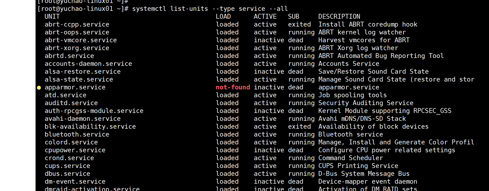
只显示运行中的服务
[root@yuchao-linux01 ~]# systemctl list-units --type service
2、查看启动和停止服务
命令：systemctl
作用：管理服务
语法：#systemctl [选项] 服务名
选项：
status：检查指定服务的运行状况
start：启动指定服务
stop：停止指定服务
restart：重启指定服务
reload：重新加载指定服务的配置文件（并非所有服务都支持reload，通常使用restart)
语法
systemctl 选项 服务名
查看sshd服务的运行状态，如果这个关了，我们就无法ssh远程连接了
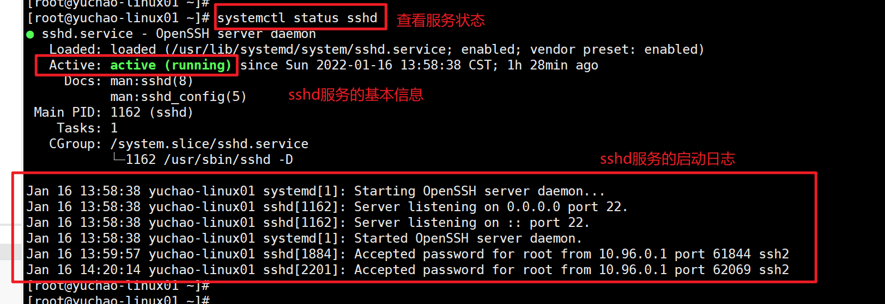
Active:active(running) 表示当前crond服务是运行状态。
试试停止sshd服务
注意，停止后，xshell远程连接会断开，只能通过vmware机器连接
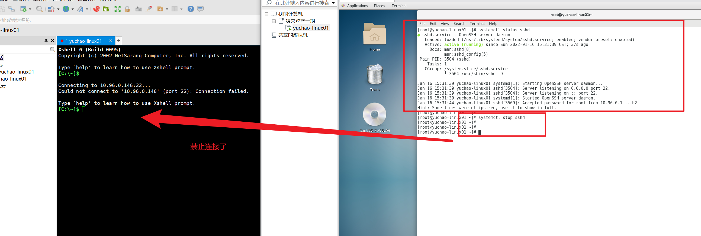
必须要重启sshd服务，才可以远程连接
[root@yuchao-linux01 ~]# systemctl start sshd
[root@yuchao-linux01 ~]# systemctl restart sshd
从这里可以看出对于一个服务的管理，产生的作用。
3、服务持久化
所谓服务持久化，就是服务在开机的时候，是否自动启动。
命令：systemctl
作用：管理服务
语法：#systemctl [选项] 服务名
选项：
enable：指定服务开机自动启动
disable：取消服务开机自动启动
is-enabled ：查看是否设置了开机自启
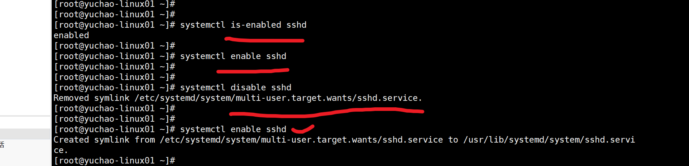
systemctl disable sshd
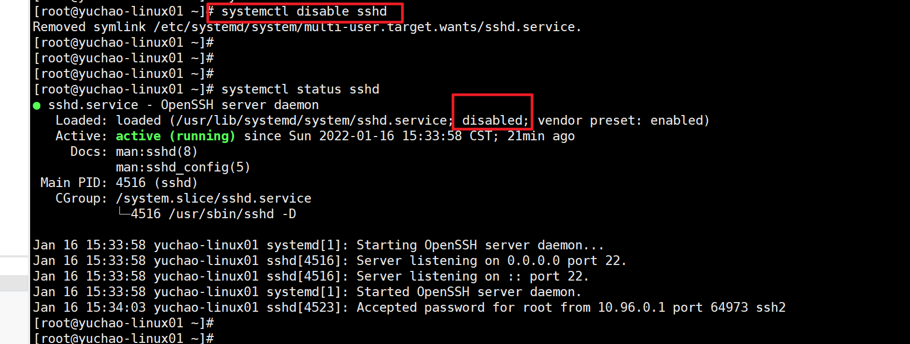
systemctl enable sshd
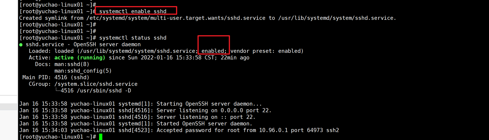
4、systemctl 小结
systemctl参数总结
| 参数 | 含义 |
|---|---|
| list-units --type service --all | 列出所有服务 |
| list-units --type service | 列出所有启动的服务 |
| start | 启动指定服务 |
| stop | 停止指定服务 |
| status | 检查指定服务的运行状况 |
| restart | 重启指定服务 |
| reload | 重新加载指定服务的配置文件（并非所有服务都支持reload，通常使用restart) |
| enable | 指定服务开机自动启动 |
| disable | 取消服务开机自动启动 |
三、常用自有服务（ntp,firewalld,crond)
| 服务名 | 含义 |
|---|---|
| ntpd | 用于同步计算机的系统时间的服务 |
| firewalld | 防火墙服务 |
| crond | 计划任务服务 |
1、ntp时间同步服务
NTP是网络时间协议(Network Time Protocol)，它是用来同步网络中各个计算机的时间的协议。
在计算机的世界里，时间非常地重要
例如：对于火箭发射这种科研活动，对时间的统一性和准确性要求就非常地高，是按照A这台计算机的时间，还是按照B这台计算机的时间？
NTP就是用来解决这个问题的，NTP（Network Time Protocol，网络时间协议）是用来使网络中的各个计算机时间同步的一种协议。
它的用途是把计算机的时钟同步到世界协调时UTC，其精度在局域网内可达0.1ms，在互联网上绝大多数的地方其精度可以达到1-50ms。
工作场景：
公司开发了一个电商网站，由于访问量很大，网站后端由100台服务器组成集群。
50台负责接收订单，50台负责安排发货，接收订单的服务器需要记录用户下订单的具体时间，把数据传给负责发货的服务器，由于100台服务器时间各不相同，记录的时间经常不一致，甚至会出现下单时间是明天，发货时间是昨天的情况。
时间是很重要的一个单位概念，很多新手、老手，都可能在时间同步服务上翻车，很多服务部署，因为时间的不同步，都会导致出错，增加排错难度。
特别是在集群下，多台服务器，需要部署联调，由于时间不正确，可能导致通信异常。
需要时间的应用。
定时任务的执行
数据同步，时间不一致等。
因此保证服务器之间的时间一致，非常重要。
1）NTP同步服务器原理
标准时间是哪里来的？
现在的标准时间是由原子钟报时的国际标准时间UTC（Universal Time Coordinated，世界协调时)，所以NTP获得UTC的时间来源可以是原子钟、天文台、卫星，也可以从Internet上获取。
在NTP中，定义了时间按照服务器的等级传播，Stratum层的总数限制在15以内
工作中，通常我们会直接使用各个组织提供的，现成的NTP服务器。
2）到哪里去找NTP服务器
NTP授时网站：http://www.ntp.org.cn/pool
找到时间服务器地址，拿来即用。
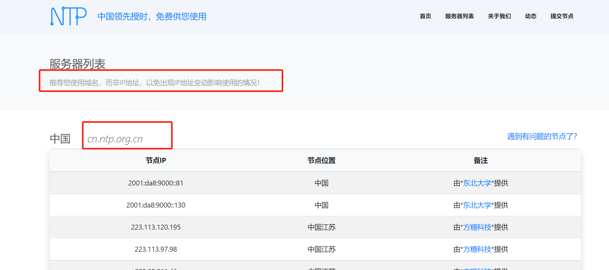
3）timedatectl 命令
timedatectl（英文全拼：timedate control）命令用于在 Linux 中设置或查询系统时间、日期和时区等配置。
centos6时代，修改系统的时区、时间，需要用到
修改时间、日期、date命令
修改时区，cp /usr/share/zoneinfo/Asia/Shanghai /etc/localtime
修改硬件时间、hwclock命令
在centos7提供了更强大的timedatectl命令，整合了时间、时区操作。
在 Linux 运维中，通常使用此命令来设置或更改当前的日期、时间和时区，或启用自动系统时钟与远程 NTP 服务器同步，以确保 Linux 系统始终保持正确的时间。
语法
timedatectl [OPTIONS...] COMMAND ...
命令command
status ：显示当前的时间设置。
show ：显示 systemd-timedated 的属性。
set-time TIME ：设置系统时间。
set-timezone ZONE ：设置系统时区。
list-timezones ：显示已知时区。
set-local-rtc BOOL ：控制 RTC 是否在当地时间。（BOOL 的值可以是 1 / true 或 0 / false）
set-ntp BOOL ：启用或禁用网络时间同步。（BOOL 的值可以是 1 / true 或 0 / false）
timesync-status ：显示 systemd-timesyncd 的状态。
show-timesync ：显示 systemd-timesyncd 的属性。
选项
选项：
-h, --help ：显示帮助信息。
--version ：显示软件包版本。
--no-pager ：不用将输出通过管道传输到寻呼机（pager）。
--no-ask-password ：不提示输入密码。
-H, --host=[USER@]HOST ：在远程主机上操作。
-M, --machine=CONTAINER ：在本地容器上操作。
--adjust-system-clock ：更改本地 RTC 模式时调整系统时钟。
--monitor ：监控 systemd-timesyncd 的状态。
-p, --property=NAME ：仅显示此名称的属性。
-a, --all ：显示所有属性，包括空属性。
--value ：显示属性时，只打印值。
timedatectl实战
显示当前系统时间、日期
世界时间查询，http://www.stl56.com/shicha/
[root@yuanlai-0224 ~]# timedatectl status
Local time: Thu 2022-03-17 18:11:37 CST
Universal time: Thu 2022-03-17 10:11:37 UTC
RTC time: Thu 2022-03-17 10:11:37
Time zone: Asia/Shanghai (CST, +0800)
NTP enabled: n/a
NTP synchronized: no
RTC in local TZ: no
DST active: n/a
解释：
当地时间
世界时间
RTC时间，本地硬件时钟(主板上的纽扣电池供电，提供机器的时间正确，在主板的集成电路上)默认以UTC为准了
时区，亚洲上海
是否启用NTP
NTP同步状态
本地时区的RTC
DST是否激活
CST解释
CST(北京时间)
北京时间，China Standard Time，中国标准时间。
在时区划分上，属东八区，比协调世界时早8小时，记为UTC+8。
UTC
UTC(世界标准时间)
协调世界时，又称世界标准时间或世界协调时间，简称UTC（从英文“Coordinated Universal Time"）
整个地球分为二十四时区，每个时区都有自己的本地时间，在国际无线电通信场合，为了统一起见，使用一个统一的时间，称为通用协调时。
GMT
格林威治标准时间指位于英国伦敦郊区的皇家格林尼治天文台的标准时间，因为本初子午线被定义在通过那里的经线(UTC与GMT时间基本相同)。
DST
夏令时指在夏天太阳升起的比较早时，将时间拨快一小时，以提早日光的使用，中国不使用。
列出机器上支持的所有时区
[root@yuanlai-0224 ~]# timedatectl list-timezones
将本地时区从上海（Asia/Shanghai）设置为阿姆斯特丹（Europe/Amsterdam）
[root@yuanlai-0224 ~]#
[root@yuanlai-0224 ~]# timedatectl set-timezone "Europe/Amsterdam"
[root@yuanlai-0224 ~]# timedatectl show
Unknown operation show
[root@yuanlai-0224 ~]# timedatectl status
Local time: Thu 2022-03-17 10:28:08 CET
Universal time: Thu 2022-03-17 09:28:08 UTC
RTC time: Thu 2022-03-17 17:28:07
Time zone: Europe/Amsterdam (CET, +0100)
NTP enabled: n/a
NTP synchronized: no
RTC in local TZ: no
DST active: no
Last DST change: DST ended at
Sun 2021-10-31 02:59:59 CEST
Sun 2021-10-31 02:00:00 CET
Next DST change: DST begins (the clock jumps one hour forward) at
Sun 2022-03-27 01:59:59 CET
Sun 2022-03-27 03:00:00 CEST
[root@yuanlai-0224 ~]#
[root@yuanlai-0224 ~]#
本地时区，恢复为亚洲、上海。
[root@yuanlai-0224 ~]# timedatectl set-timezone "Asia/Shanghai"
[root@yuanlai-0224 ~]# timedatectl status
Local time: Thu 2022-03-17 17:32:34 CST
Universal time: Thu 2022-03-17 09:32:34 UTC
RTC time: Thu 2022-03-17 17:32:33
Time zone: Asia/Shanghai (CST, +0800)
NTP enabled: n/a
NTP synchronized: no
RTC in local TZ: no
DST active: n/a
timedatectl更多用法
timedatectl用法还有很多，以后有需要单独查询学习即可，包括如下功能
修改时区为UTC（世界标准时间）
timedatectl set-timezone UTC
设置系统时间（格式：HH:MM:SS）
timedatectl set-time "07:25:46"
设置系统日期（格式：YYYY-MM-DD）
timedatectl set-time "2021-12-12"
设置ntp服务开启(得先安装ntp时间同步服务)
timedatectl set-ntp true/false
修改RTC硬件时间
[root@yuanlai-0224 ~]# timedatectl set-local-rtc 0 # 和UTC时间同步
[root@yuanlai-0224 ~]# timedatectl set-local-rtc 1 # 和local time同步
如果你跟着于超老师，操作到这里，你的时间可能已经乱了。。怎么办？
向下继续看教程啊怎么办！
4）时间同步操作
机器时间错乱后，可以进行
- 时间同步，搭建ntpd服务
- 时间校准，ntpdate命令
同步服务器时间方式有2 个：一次性同步手动同步、通过服务自动同步。
时间同步注意点（生产经验的坑）
ntpd在实际同步时间时是一点点的校准过来时间的，最终把时间慢慢的校正对
而ntpdate不会考虑其他程序是否会阵痛，直接调整时间。一个是校准时间，一个是调整时间。
因为许多应用程序依赖连续的时钟，而使用ntpdate这样的时钟跃变，有时候会导致很严重的问题，如数据库事务操作等。
并且，还有如下缺陷
- 安全问题
ntpdate的设置依赖于ntp服务器的安全性，攻击者可以利用一些软件设计上的缺陷，拿下ntp服务器并令与其同步的服务器执行某些消耗性的任务。
- 太过于暴力
ntpdate是急变，是立即修改系统时间，非常依赖于时序的程序可能会出错，比如根据时间执行备份动作的脚本，或者一些监控程序。
因此，企业服务器里一般会部署ntpd服务，让服务器自动、定期的进行时间同步，且以公共时间服务器池为准，保证服务器集群的时间正确且一致。
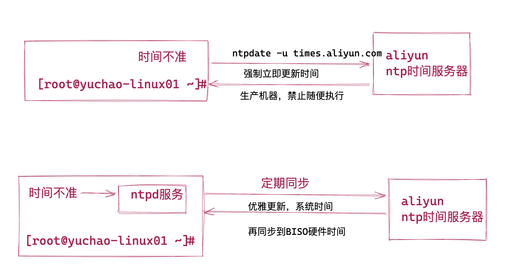
手动同步ntpdate
该ntpdate命令需要单独安装。
yum install ntpdate -y
ntpdate使用语法
ntpdate 时间服务器地址
# NTP中国服务器，cn.ntp.org.cn
# 用法
[root@yuchao-linux01 ~]# ntpdate cn.ntp.org.cn
16 Jan 16:30:08 ntpdate[5312]: step time server 182.92.12.11 offset 45505765.702122 sec
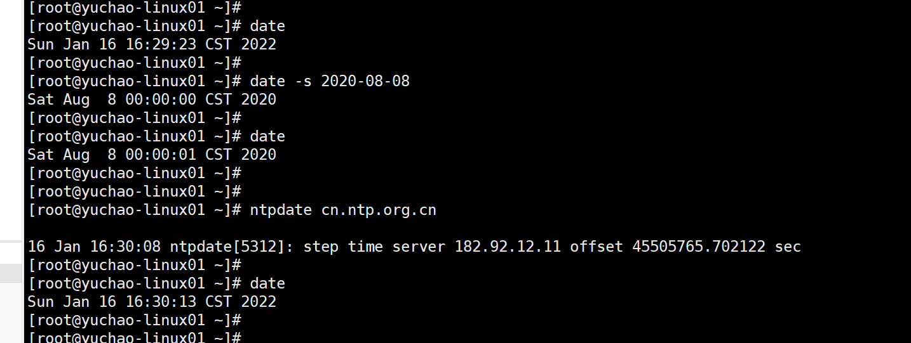
友情提示，错误情况，你可能输入的NTP服务器地址有误
1.要么是你机器无法上网
2.要么是输入的NTP服务器有问题
3.你输入错误
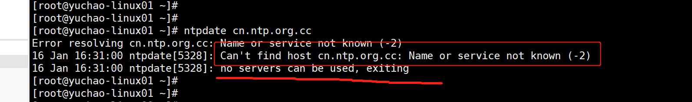
自动同步ntpd服务（推荐使用）
1.ntpd服务安装
# 查看是否安装
[root@yuchao-linux01 ~]#
[root@yuchao-linux01 ~]# rpm -q ntp
package ntp is not installed
# 如果没有安装过的话，可以执行此命令安装
[root@yuchao-linux01 ~]# yum install ntp -y
自动同步需要开启linux的ntp服务。
systemctl start/stop/restart ntpd
每次开机，自动启动ntpd服务，就能够自动同步时间，保证服务器时间精准。
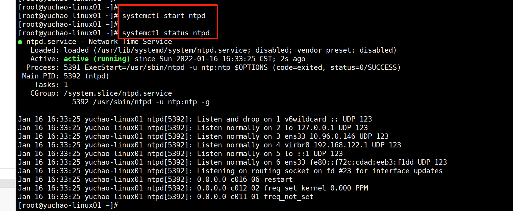
关于ntpd服务，默认用的哪些时间服务器地址，配置信息在
修改 /etc/ntp.conf 配置文件，参考如下修改
3 # #系统时间与BIOS事件的偏差记录
4 driftfile /var/lib/ntp/drift
5
6 # by yuchao create ntpd.log
7 logfile /var/log/ntpd.log
8
9 # by yuchao create ntpd.pid
10 pidfile /var/run/ntpd.pid
注释掉默认的这几行
19 # Use public servers from the pool.ntp.org project.
20 # Please consider joining the pool (http://www.pool.ntp.org/join.html).
21 #server 0.centos.pool.ntp.org iburst
22 #server 1.centos.pool.ntp.org iburst
23 #server 2.centos.pool.ntp.org iburst
24 #server 3.centos.pool.ntp.org iburst
添加新的互联网中ntp服务器
# prefer表示为优先，表示本机优先同步该服务器时间
# 阿里云的延迟明显很低 https://help.aliyun.com/document_detail/92704.html
server times.aliyun.com iburst prefer
server ntp.aliyun.com iburst
server cn.pool.ntp.org iburst
添加新的ntp服务器地址，参数解释 iburst，当某一个ntp挂掉时，向它发送一些数据包，检测是否挂掉。
########## 参数解释
ntpd.conf配置文件采用restrict实现权限控制
Restrict [IP] mask [netmask_IP] [parameter]
Parameter 的
ignore :拒绝所有类型的NTP联机。
nomodify: 客户端不能使用ntpc与ntpq这两个程序来修改服务器的时间参数，但客户端可透过这部主机来进行网络校时；
noquery:客户端不能够使用ntpc与ntpq等指令来查询时间服务器，不提供NTP的网络校时。
notrap:不提供trap 这个运程事件登入的功能。
notrust:拒绝没有认证的客户端。
Kod:kod技术可以阻止“Kiss of Death “包对服务器的破坏。
Nopeer:不与其他同一层的NTP服务器进行时间同步。
利用server 设定上层NTP服务器，格式如下：
server [IP or hostname] [prefer]
参数主要如下：
perfer:表示优先级最高
burst ：当一个运程NTP服务器可用时，向它发送一系列的并发包进行检测。
iburst ：当一个运程NTP服务器不可用时，向它发送一系列的并发包进行检测。
用法如
server times.aliyun.com iburst prefer # prefer表示为优先，表示本机优先同步该服务器时间
server ntp.aliyun.com iburst
server cn.pool.ntp.org iburst
设置系统时间和硬件时间同步
实现clock时间与system时间同步，配置/etc/sysconfig/ntpd文件
ntp服务，默认只会同步系统时间。
如果想要让ntp同时同步硬件时间，可以设置/etc/sysconfig/ntpd文件，在/etc/sysconfig/ntpd文件中，添加 SYNC_HWCLOCK=yes这样，就可以让硬件时间与系统时间一起同步。
[root@yuchao-linux01 ~]# cat /etc/sysconfig/ntpd
# Command line options for ntpd
OPTIONS="-g"
SYNC_HWCLOCK=yes
启动ntpd服务
启动ntpd程序
[root@yuchao-linux01 ~]# systemctl start ntpd
检查ntpd运行后，生成的相关文件
[root@yuchao-linux01 ~]# ll /var/log/ntpd.log
-rw-r--r-- 1 root root 864 Mar 17 18:25 /var/log/ntpd.log
[root@yuchao-linux01 ~]# ll /var/run/ntpd.pid
-rw-r--r-- 1 root root 4 Mar 17 18:25 /var/run/ntpd.pid
ntpstat
确认本地NTP与上层NTP服务器是否联通
[root@yuchao-linux01 ~]# ntpstat
# 以和162.159.200.123服务器同步过
synchronised to NTP server (162.159.200.123) at stratum 4
# 时间校正到相差1110ms之内
time correct to within 1110 ms
# 每64秒会向上级NTP轮询更新一次时间
polling server every 64 s
ntpq
查看时间同步状态
-p 显示时间服务器列表
[root@yuchao-linux01 ~]# ntpq -p
remote refid st t when poll reach delay offset jitter
==============================================================================
*120.25.115.20 10.137.53.7 2 u 20 64 7 41.614 19.046 4.108
+203.107.6.88 10.137.38.86 2 u 24 64 7 15.996 23.737 6.711
+time.cloudflare 10.28.12.207 3 u 23 64 17 282.792 -14.257 59.448
参数详解
remote ：本地主机所连接的上层NTP服务器，最左边的符号如下：
如果有[*] 代表目前正在使用当中的上层NTP服务器。
如果有[+] 代表也有连上上层NTP服务器，可以作为提高时间更新的候选NTP服务器
如果有[-] 代表同步的该NTP服务器被认为是不合格的NTP Server
如果有[x] 代表同步的外网NTP服务器不可用
refid ：指的是给上层NTP服务器提供时间校对的服务器。
St:上层NTP服务器的级别。
When: 上一次与上层NTP服务器进行时间校对的时间（单位：s)
Poll :本地主机与上层NTP服务器进行时间校对的周期（单位：s）
reach：已经向上层 NTP 服务器要求更新的次数
delay：网络传输过程当中延迟的时间，单位为 10^(-6) 秒
offset：时间补偿的结果，单位为10^(-6) 秒
jitter：Linux 系统时间与 BIOS 硬件时间的差异时间， 单位为 10^(-6) 秒。
5）date/hwclock/clock命令
date
可用来设置系统日期与时间。只有管理员才有设置日期与时间的权限,一般用户只能用date 命令显示时间。
若不加任何参数,data 会显示目前的日期与时间。
[root@yuchao-linux01 ~]# date
Thu Mar 17 18:59:49 CST 2022
语法，参数
-s, --set=STRING
根据 STRING 设置时间
格式化修改时间+日期
[root@yuchao-linux01 ~]# date -s '20180808 13:13:13'
Wed Aug 8 13:13:13 CST 2018
格式化修改时间
[root@yuchao-linux01 ~]# date -s '18:00:00'
Wed Aug 8 18:00:00 CST 2018
格式化修改日期
[root@yuchao-linux01 ~]# date -s '20120606'
Wed Jun 6 00:00:00 CST 2012
[root@yuchao-linux01 ~]#
[root@yuchao-linux01 ~]# date '+%F'
2012-06-06
hwclock
hwclock命令是一个硬件时钟访问工具，它可以显示当前时间、设置硬件时钟的时间和设置硬件时钟为系统时间，也可设置系统时间为硬件时钟的时间。
在Linux中有硬件时钟与系统时钟两种时钟。
硬件时钟是指主机板上的时钟设备，也就是通常可在BIOS画面设定的时钟。
系统时钟则是指kernel中的时钟。当Linux启动时，系统时钟会去读取硬件时钟的设定，之后系统时钟即独立运作。
所有Linux相关指令与函数都是读取系统时钟的设定。
语法参数
--systohc 将硬件时钟调整为与目前的系统时钟一致。
--hctosys 将系统时钟调整为与目前的硬件时钟一致。
--show 显示硬件时钟的时间与日期。
--debug 显示hwclock执行时详细的信息。
-w, --systohc set the hardware clock from the current system time
--systz set the system time based on the current timezone
--adjust adjust the RTC to account for systematic drift since
以系统时间为准，修改硬件时钟
[root@yuchao-linux01 ~]# hwclock --hctosys
[root@yuchao-linux01 ~]# hwclock --show
Thu 17 Mar 2022 07:07:42 PM CST -0.833680 seconds
[root@yuchao-linux01 ~]#
以硬件时间为准，修改系统时间
[root@yuchao-linux01 ~]# hwclock --systohc
[root@yuchao-linux01 ~]# hwclock --show
Thu 17 Mar 2022 07:08:18 PM CST -0.740291 seconds
6）开机自启ntpd
# 默认为CentOS7的配置，CentOS6中需要使用chkconfig命令
[root@yuchao-linux01 ~]# systemctl enable ntpd
Created symlink from /etc/systemd/system/multi-user.target.wants/ntpd.service to /usr/lib/systemd/system/ntpd.service.
2、firewalld防火墙
什么是防火墙
防火墙：防范一些网络攻击。有软件防火墙、硬件防火墙之分。
防火墙好比一堵真的墙，能够隔绝些什么，保护些什么。
防火墙的本义是指古代构筑和使用木制结构房屋的时候，为防止火灾的发生和蔓延，人们将坚固的石块堆砌在房屋周围作为屏障，这种防护构筑物就被称之为“防火墙”。其实与防火墙一起起作用的就是“门”。
如果没有门，各房间的人如何沟通呢，这些房间的人又如何进去呢？当火灾发生时，这些人又如何逃离现场呢？
这个门就相当于我们这里所讲的防火墙的“安全策略”，所以在此我们所说的防火墙实际并不是一堵实心墙，而是带有一些小孔的墙。
这些小孔就是用来留给那些允许进行的通信，在这些小孔中安装了过滤机制，就是防火墙的过滤策略了。
防火墙的作用
防火墙具有很好的保护作用。入侵者必须首先穿越防火墙的安全防线，才能接触目标计算机。
防火墙的功能
防火墙对流经它的网络通信进行扫描，这样能够过滤掉一些攻击，以免其在目标计算机上被执行。防火墙还可以关闭不使用的端口。而且它还能禁止特定端口的流出通信。
最后，它可以禁止来自特殊站点的访问，从而防止来自不明入侵者的所有通信。
防火墙概念
防火墙一般有硬件防火墙和软件防火墙
硬件防火墙：在硬件级别实现部分防火墙功能，另一部分功能基于软件实现，性能高，成本高。
软件防火墙：应用软件处理逻辑运行于通用硬件平台之上的防火墙，性能低，成本低。
windows防火墙
Linux防火墙（图解）
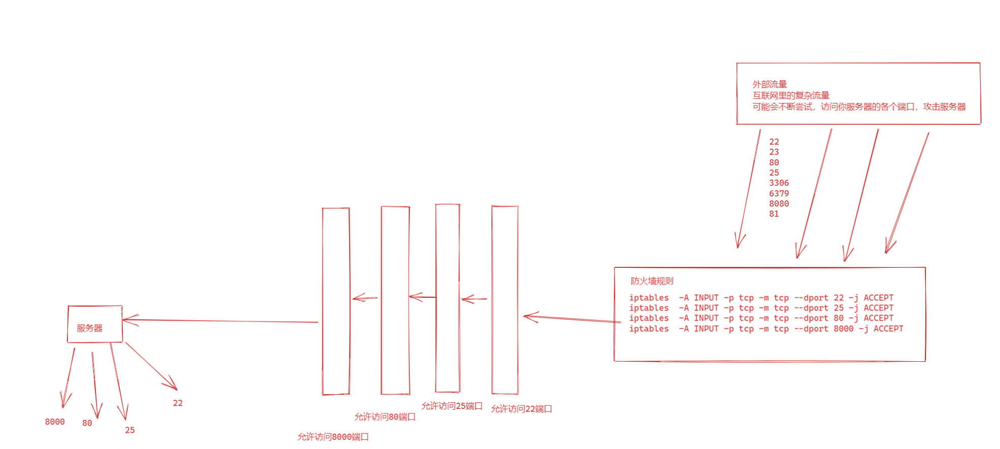
可见，服务器上有各种规则，限制什么请求可以进入到服务器
3、firewalld防火墙的概念
1）区域
CentOS6x中防火墙叫做iptables
CentOS7.x 中默认使用的防火墙是firewalld，但是依然更多的是使用iptables，firewalld默认都关了。
firewalld增加了区域的概念，所谓区域是指，firewalld预先准备了几套防火墙策略的集合，类似于策略的模板，用户可以根据需求选择区域。
常见区域及相应策略规则
| 区域 | 默认策略 |
|---|---|
| trusted | 允许所有数据包 |
| home | 拒绝流入的流量，除非与流出的流量相关，允许ssh,mdns,ippclient,amba-client,dhcpv6-client服务通过 |
| internal | 等同于home |
| work | 拒绝流入的流量，除非与流出的流量相关，允许ssh,ipp-client,dhcpv6-client服务通过 |
| public | 拒绝流入的流量，除非与流出的流量相关，允许ssh,dhcpv6-client服务通过 |
| external | 拒绝流入的流量，除非与流出的流量相关，允许ssh服务通过 |
| dmz | 拒绝流入的流量，除非与流出的流量相关，允许ssh服务通过 |
| block | 拒绝流入的流量，除非与流出的流量相关，非法流量采取拒绝操作 |
| drop | 拒绝流入的流量，除非与流出的流量相关，非法流量采取丢弃操作 |
2）运行模式和永久模式
运行模式：此模式下，配置的防火墙策略立即生效，但是不写入配置文件
永久模式：此模式下，配置的防火墙策略写入配置文件，但是需要reload重新加载才能生效。
==firewall默认采用运行模式==
4、firewalld防火墙的配置
1）查看，开启和停止firewalld服务
命令：systemctl
作用：管理服务
语法：#systemctl [选项] firewalld
选项：
status：检查指定服务的运行状况
start：启动指定服务
stop：停止指定服务
restart：重启指定服务
reload：重新加载指定服务的配置文件（并非所有服务都支持reload，通常使用restart)
使用systemctl来管理firewalld的服务，具体命令前面已经讲过，只是服务名换成了firewalld，这里不再赘述
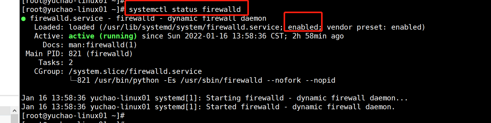
2) 管理firewall配置
命令：firewall-cmd
作用：管理firewall具体配置
语法：#firewall-cmd [参数选项1] ....[参数选项n]
常用选项：
查看默认使用的区域
[root@yuchao-linux01 ~]# firewall-cmd --get-default-zone
public
查看所有可用区域
[root@yuchao-linux01 ~]# firewall-cmd --get-zones
block dmz drop external home internal public trusted work
列出当前使用区域配置
[root@yuchao-linux01 ~]# firewall-cmd --list-all
public (active)
target: default
icmp-block-inversion: no
interfaces: ens33
sources:
services: ssh dhcpv6-client # 允许的是ssh服务，也就是22端口的流量，是允许登录的
ports:
protocols:
masquerade: no
forward-ports:
source-ports:
icmp-blocks:
rich rules:
列出所有区域的配置信息
[root@yuchao-linux01 ~]# firewall-cmd --list-all-zones
添加允许通过的服务或端口（python,ntp）
你的linux机器，当前使用的是public区域的规则
默认信任的服务是，ssh，dhcp
准备一个web服务，通过python提供的简单命令，
python -m SimpleHTTPServer 80
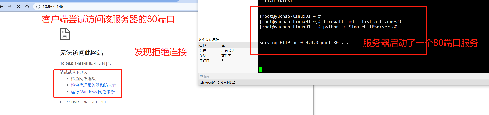
此时的防火墙，是没有允许80端口的请求，进入到服务器的，除非你加一个规则，允许80端口的请求通过。
[root@yuchao-linux01 ~]# firewall-cmd --zone=public --add-port=80/tcp
success
[root@yuchao-linux01 ~]#
[root@yuchao-linux01 ~]#
[root@yuchao-linux01 ~]# firewall-cmd --zone=public --list-all
public (active)
target: default
icmp-block-inversion: no
interfaces: ens33
sources:
services: ssh dhcpv6-client
ports: 80/tcp # 允许80端口通过了
protocols:
masquerade: no
forward-ports:
source-ports:
icmp-blocks:
rich rules:
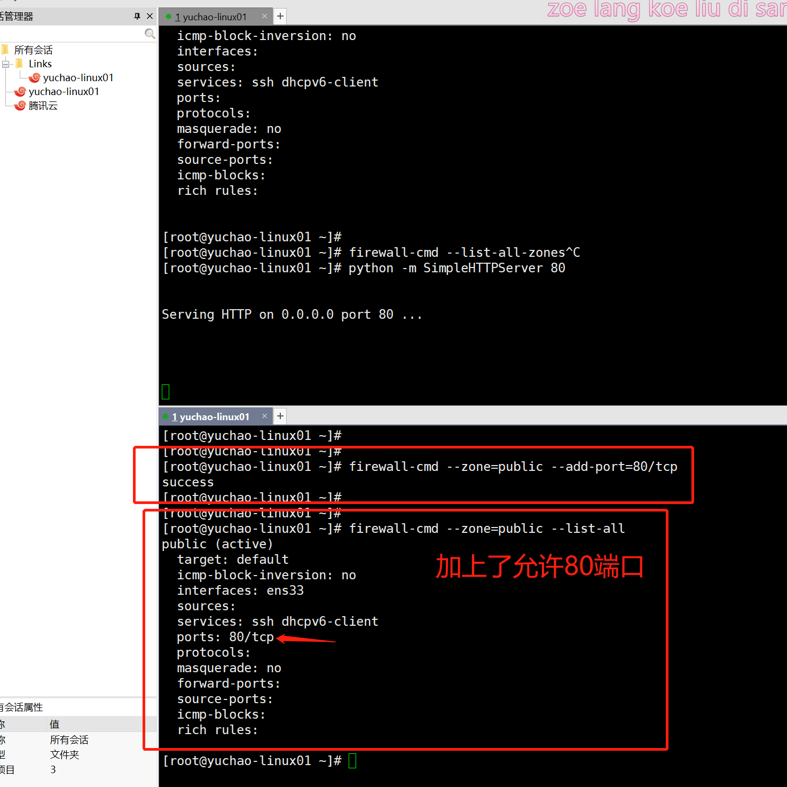
此时客户端已经可以正确访问服务器的80端口
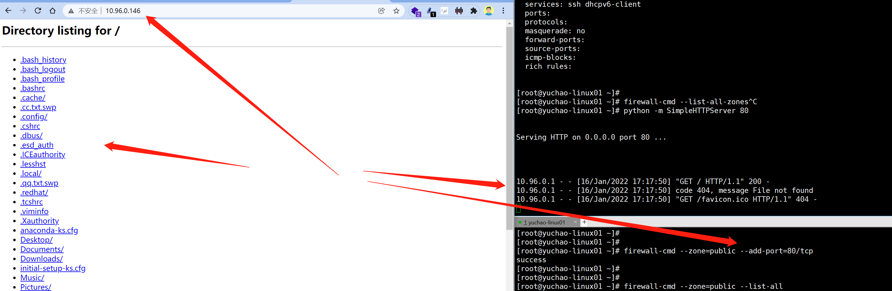
去掉允许通过的端口
比如刚才你临时个服务器，添加了一个文件下载的服务，需要访问80端口
你现在不需要这个功能了，想去掉防火墙规则，继续加强服务器安全。
[root@yuchao-linux01 ~]# firewall-cmd --zone=public --remove-port=80/tcp
success
[root@yuchao-linux01 ~]#
[root@yuchao-linux01 ~]# firewall-cmd --zone=public --list-all
public (active)
target: default
icmp-block-inversion: no
interfaces: ens33
sources:
services: ssh dhcpv6-client
ports: # 端口被移除了
protocols:
masquerade: no
forward-ports:
source-ports:
icmp-blocks:
rich rules:
此时再想访问http://10.96.0.146/，你的请求就到不了服务器了。
添加允许ntp的防火墙策略
[root@yuchao-linux01 ~]# firewall-cmd --permanent --add-service=ntp
success
[root@yuchao-linux01 ~]#
[root@yuchao-linux01 ~]# firewall-cmd --reload
success
[root@yuchao-linux01 ~]# firewall-cmd --list-all
public (active)
target: default
icmp-block-inversion: no
interfaces: ens33
sources:
services: ssh dhcpv6-client ntp
ports: 80/tcp
protocols:
masquerade: no
forward-ports:
source-ports:
icmp-blocks:
rich rules:
检查iptables语句
[root@yuchao-linux01 ~]# iptables -L |grep ntp
ACCEPT udp -- anywhere anywhere udp dpt:ntp ctstate NEW
永久模式参数
permaent(永久性的)
# 永久性添加规则，并未立即生效
[root@yuchao-linux01 ~]# firewall-cmd --permanent --zone=public --add-port=80/tcp
success
[root@yuchao-linux01 ~]#
[root@yuchao-linux01 ~]#
[root@yuchao-linux01 ~]# firewall-cmd --list-all
public (active)
target: default
icmp-block-inversion: no
interfaces: ens33
sources:
services: ssh dhcpv6-client
ports: # 端口规则还未生成
protocols:
masquerade: no
forward-ports:
source-ports:
icmp-blocks:
rich rules:
# 重新加载防火墙规则
[root@yuchao-linux01 ~]# firewall-cmd --reload
success
[root@yuchao-linux01 ~]# firewall-cmd --zone=public --list-all
public (active)
target: default
icmp-block-inversion: no
interfaces: ens33
sources:
services: ssh dhcpv6-client
ports: 80/tcp
protocols:
masquerade: no
forward-ports:
source-ports:
icmp-blocks:
rich rules:
[root@yuchao-linux01 ~]# iptables -L |grep tcp
ACCEPT tcp -- anywhere anywhere tcp dpt:ssh ctstate NEW
ACCEPT tcp -- anywhere anywhere tcp dpt:http ctstate NEW
[root@yuchao-linux01 ~]#
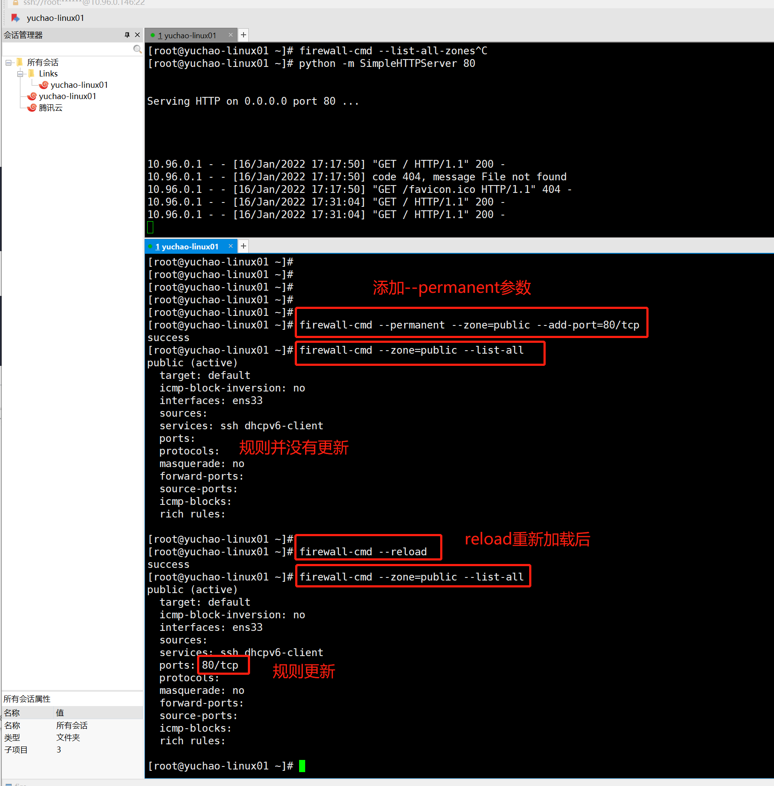
5、计划任务crontab
你每天是怎么起床的？有的人有女朋友，，或是男朋友，，而我是被穷醒的，，，
什么是计划任务： 后台运行，到了预定的时间就会自动执行的任务，前提是：事先手动将计划任务设定好。
周期性任务执行
- 比如夜里进行用户数据备份（夜里访问量较少，备份动作吃资源，影响用户访问）
- 游戏公司特殊
清空/tmp目录下的内容
- mysql数据库备份
- redis数据备份
- 定时获取系统的状态信息
- 定时每天进行时间同步
- 网站用户日志定时切割、备份
这就用到了crond服务。
1)计划任务的作用
作用：
操作系统不可能24 小时都有人在操作，有些时候想在指定的时间点去执行任务（例如：每天凌晨 2 点去重新启动Apache），此时不可能真有人每天夜里 2 点去执行命令，这就可以交给计划任务程序去执行操作了。
2)查看计划任务
==语法：# crontab 选项==
常用选项：
==-l：list，列出指定用户的计划任务列表==
==-e：edit，编辑指定用户的计划任务列表，简单来说，计划任务就是一个文件==
-u：user，指定的用户名，如果不指定，则表示当前用户
-r：remove，删除指定用户的计划任务列表
示例代码：列出当前用户的计划任务列表
[root@yuchao-linux01 ~]# crontab -l
no crontab for root
默认应该是没有设置定时任务的。
3)编辑计划任务（重点）
进入计划任务编辑文件
[root@yuchao-linux01 ~]# crontab -e
打开计划任务编辑文件后，可以在此文件中编写我们自定义的计划任务：
计划任务的规则语法格式，以行为单位，一行则为一个计划：
==分 时 日 月 周 需要执行的命令==
例如：0 0 * * * reboot，代表每天0时0分执行reboot指令。
3.1) crontab语法（重点）
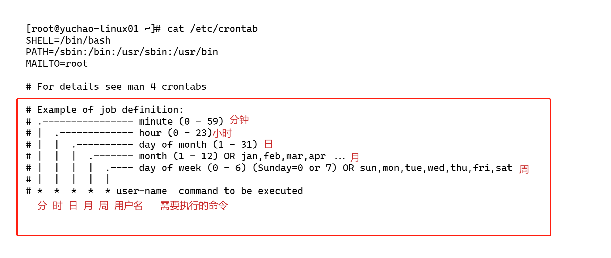
取值范围（常识）：
分：0~59
时：0~23
日：1~31
月：1~12
周：0~6，0 和 7 表示星期天
四个符号：
*：表示取值范围中的每一个数字
-：做连续区间表达式的，要想表示1~7，则可以写成：1-7
/：表示每多少个，例如：想每 10 分钟一次，则可以在分的位置写：*/10
,：表示多个取值，比如想在 1 点，2 点 6 点执行，则可以在时的位置写：1,2,6
并且在定时任务里，命令，请写上绝对路径。
通过whereis命令搜索 绝对路径
[root@yuchao-linux01 ~]# whereis systemctl
systemctl: /usr/bin/systemctl /usr/share/man/man1/systemctl.1.gz
语法实践基础题
0 0 * * * 每天0点执行
15 1 * * * 每天夜里1点15分执行
* * * * * 每分钟执行
0 * * * * 每小时整点执行
0 */2 * * * 每隔2小时执行
*/30 * * * * 每隔30分钟执行
00 01 15 * * 每个月15号的夜里1点执行
00 05 1-14 * * 每个月的1到14号的凌晨5点执行
00 6-8 */5 * * 每隔5天的凌晨6-8点之间的整点执行
00 20-23/2 * * * 每天晚上8点到11点之间，每隔2小时的整点执行
00 23 * * 1-3 每周1到周三的晚上11点整执行
4)案例
学习定时任务，最简单的，就是直接通过案例，掌握其语法
综合基础问题
每天早上7:30起床学习
30 7 * * *
每隔3天，夜里2天，起来学习
0 2 */3 * *
夜里1点时候，每隔10分钟 起来吃点东西
*/10 1 * * *
夜里1点，3点，每隔10分钟 起来吃点东西
*/10 1,3 * * *
夜里1点到3点之间，每隔10分钟，起来吃点东西
*/10 1-3 * * *
每隔2个月的周六，夜里2点30 去见网友
30 2 * */2 6
结论
- 时间从左到右，依次写
- 具体日期和星期，不能同时出现
问题1：每月1、10、22 日的4:45 重启network 服务
45 4 1,10,22 * * /usr/bin/systemctl restart network
问题2：每周六、周日的1:10 重启network 服务
10 1 * * 6,7 /usr/bin/systemctl restart network
问题3：每天18:00 至23:00 之间每隔30 分钟重启network 服务
*/30 18-23 * * * /usr/bin/systemctl restart network
问题4：每隔两天的上午8 点到11 点的第3 和第15 分钟执行一次重启
3,15 8-11 */2 * * /usr/sbin/reboot
问题5 ：每天凌晨整点重启nginx服务。
00 * * * * /usr/bin/systemctl restart nginx
问题6：每周4的凌晨2点15分执行命令
15 2 * * 4 command
问题7：工作日的工作时间内的每小时整点执行脚本。
00 9-18 * * 1-5 /usr/bin/bash my.sh
问题8：如果定时任务的时间，没法整除，定时任务就没有意义了，得通过其他手段，自主控制定时任务频率。
问题9：crontab提供最小分钟级别的任务，想完成秒级别的任务，得通过编程语言自己写。
问题10：每1分钟向文件里写入一句话"超哥666"，且实时监测文件内容变化。
1.写入计划任务
crontab -e
2.写入语句
[root@yuchao-linux01 ~]# crontab -e
no crontab for root - using an empty one
crontab: installing new crontab
[root@yuchao-linux01 ~]#
[root@yuchao-linux01 ~]# crontab -l
* * * * * /usr/bin/echo '超哥666' >> /tmp/chaoge.txt
# 3.等待定时任务执行
[root@yuchao-linux01 ~]# tail -F /tmp/chaoge.txt
tail: cannot open ‘/tmp/chaoge.txt’ for reading: No such file or directory
tail: ‘/tmp/chaoge.txt’ has appeared; following end of new file
超哥666
超哥666
# 4. 删除用户的定时任务
crontab -r
问题11：每天凌晨2点30，执行ntpdate命令同步times.aliyun.com，并且sys同步到硬件时钟，且不输出任何信息。
1.ntpdate同步成功后，会生成同步的结果日志
[root@yuchao-linux01 ~]# ntpdate -u ntp.aliyun.com
可以重定向标准输出结果到黑洞文件，
ntpdate -u ntp.aliyun.com &> /dev/null
2.编写定时任务语句
30 2 * * * /usr/sbin/ntpdate -u ntp.aliyun.com &> /dev/null;/usr/sbin/hwclock -w &> /dev/null
5)扩展
① crontab 权限问题
crontab是任何用户都可以创建的计划任务，但是超级管理员可以通过配置来设置某些用户不允许设置计划任务 。
==黑名单==配置文件位于：/etc/cron.deny 里面写用户名，一行只能写一个
# 禁止yuchao01用户设置定时任务
[root@yuchao-linux01 ~]# vim /etc/cron.deny
[root@yuchao-linux01 ~]#
[root@yuchao-linux01 ~]# cat /etc/cron.deny
yuchao01
# 切换yuchao01用户登录
[yuchao01@yuchao-linux01 ~]$ crontab -e
You (yuchao01) are not allowed to use this program (crontab)
See crontab(1) for more information
==白名单==还有一个配置文件，/etc/cron.allow （本身不存在，自己创建）
注意：白名单优先级高于黑名单，如果一个用户同时存在两个名单文件中，则会被默认允许创建计划任务。
# 添加白名单后，会立即更新权限
[root@yuchao-linux01 ~]# echo 'yuchao01' > /etc/cron.allow
# yuchao01就可以写入了
[yuchao01@yuchao-linux01 ~]$ crontab -e
② 查看计划任务文件保存路径
问题：计划任务文件具体保存在哪里呢？
答：/var/spool/cron/用户名文件中，如果使用root用户编辑计划任务，则用户文件名为root。
有图可见，该目录存放用户的定时任务信息。
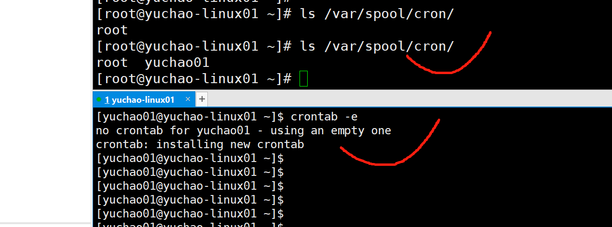
# 定时任务，信息都是写在文件里的
[root@yuchao-linux01 ~]# cat /var/spool/cron/root
* * * * * /usr/bin/echo '超哥666' >> /tmp/chaoge.txt
[root@yuchao-linux01 ~]#
[root@yuchao-linux01 ~]# cat /var/spool/cron/yuchao01
* * * * * echo "666"
③ 查看计划任务日志信息
问题：在实际应用中，我们如何查看定时任务运行情况？
答：通过计划任务日志，日志文件位于/var/log/cron
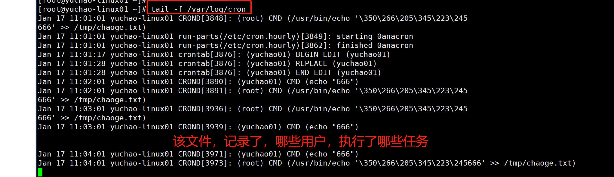
6、定时任务经验总结（规范）
- 编写定时任务要有注释说明
- 编写定时任务路径信息尽量使用绝对路径
- 编写定时任务命令需要采用绝对路径执行
- /etc/crontab文件中定义了crontab可用的PATH搜索路径
- 编写定时任务时,可以将输出到屏幕上的信息保存到黑洞中,避免占用磁盘空间
* * * * * sh test.sh &>/dev/null- 或者重定向到文件中，便于排查问题
- 定时任务中执行命令,如果产生输出到屏幕的信息,都会以邮件方式告知用户
/var/spool/mail/root，该日志会不断增大，占用磁盘空间- 关闭本地邮件服务即可，
systemctl stop postfix
- 当定时任务需要执行复杂任务的时候，需要编写为shell脚本再去运行了，注意脚本得有x权限
vim backup.sh 写入
cp -a /data /backup
tar zcvf /backup/data.tar.gz /data
# 写入配置文件
crontab -e
# 这是于超老师写的备份脚本，用于定时任务
* * * * * /bin/sh /server/scripts/backup.sh &>/dev/null
四、Linux软件包
科普，什么是代码文件。
电脑程序Program，就是某一个编程语言编写的一个代码文件，里面包含了该语言特有的指令，以及各种字符、符号。
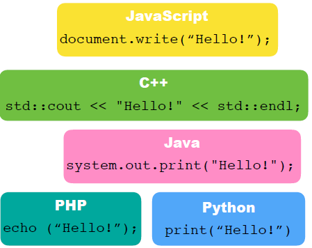
linux自带的network管理脚本，shell脚本。
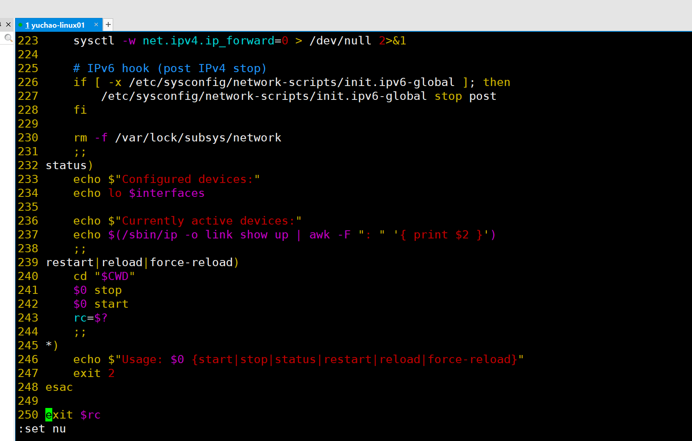
什么是软件程序。
软件程序，就是程序员通过编程语言写好一堆代码，通过一些方式运行，比如编译后，生成一个应用程序，称之为软件。
以及手机APP，或者我们平时访问的网站，都是程序员通过写代码，开发出来的
1、软件包概述
问题来了，我们既然知道，如各种应用程序，app，各种软件
应该如何去下载，安装这些软件呢？
正常我们安装软件是如下
windows程序
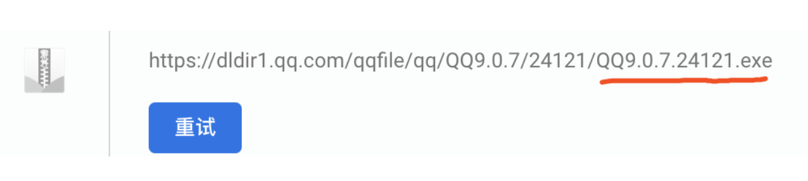
macos程序
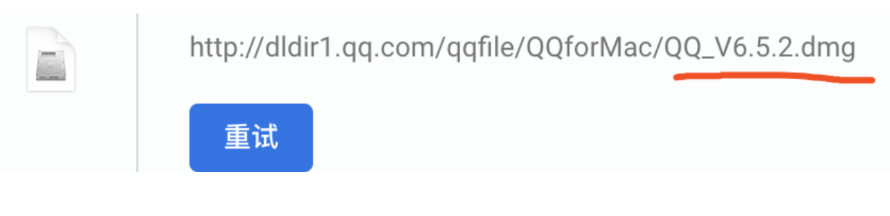
因此软件包，指的就是，程序安装所需要的一个文件，在可视化的系统下，一般是双击安装即可，用于安装某个程序，某个软件。
软件包顾名思义就是将应用程序、配置文件和数据打包的产物
所有的linux发行版都采用了某种形式的软件包系统，这使得linux软件管理和在windows下一样方便，suse、red hat、fedora等发行版都是用rpm包，Debian和Ubuntu则使用.deb格式的软件包。
mysql-5-3-4.rpm
redis-3-4-3.rpm
nginx2-3-2.rpm
Linux下也有很多可以安装的软件，而这些软件的安装包可细分为两种，分别是源码包和二进制包。
1）源码包
源码包就是一大堆源代码程序，是由程序员按照特定的格式和语法编写出来的。
计算机只能识别机器语言，也就是二进制语言，所以源码包安装之前需要编译。
编译过程耗时较长
- 大多数用户不懂开发，编译过程中可能会有各种错误，用户无力解决。
- 了解决使用源码包安装的问题，Linux 软件包的安装出现了使用二进制包的安装方式。
- 系统级开发：
- C/C++：httpd、nginx
- golang：docker
- 应用及开发：
- java：hadoop，hbase
- python：openstack
- perl
- ruby
- php
2）编译程序过程
当程序员通过如C语言写完代码后，并不能立即运行， 因为笔记本不认识这些代码（就是一堆英文字母）。
电脑只认识机器语言（二进制的0和1组成的语言）
例如：下图是某一电脑的机器语言程式，用来计算两数之和。虽然机器语言程式执行效率最快，但不易阅读，也不易撰写。
如果代码都要写机器语言的话，程序员就不会那么多了。。学习难度，五百颗星。
为了使设计程序更简单，于是发展出较方便使用的程序语言，C / C++ 就是其中一种。
写好的程序称为原始码(source code)，它并不能直接执行，必须透过编译器(compiler)将程式转译成机器语言后，电脑才能执行。
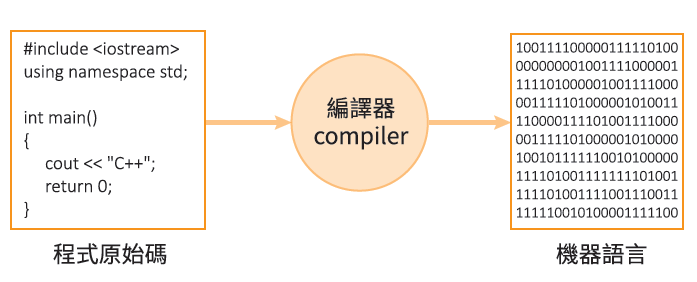
比如c语言的gcc编译器
比如golang语言的golang编译器
这些东西，我们只需要知道它的存在即可，安装编译器，使用编译器。
后续我们会下载软件包源代码，通过gcc编译器，编译成可以使用的软件指令，即可使用。
当源代码，编译后成为可以使用，可以执行的软件，我们机器上，很多软件，都是编译后的产物。
源代码
↓
编译器
↓
二进制可执行命令
↓
一次编译，到处运行（于超老师可以生成一个二进制命令，发给大家，只要是linux 64位机器上可以直接运行，免安装）
windows里面编译的软件，你不需要关心它源代码，只需要用即可，知道该软件是怎么来的。
linux里面编译好的软件。
你用的ls命令，为什么能显示出当前目录下的资料，也是通过c语言代码，写好后，编译，出现ls这个指令。
如果你未来学习编程开发，就会体会这个过程。
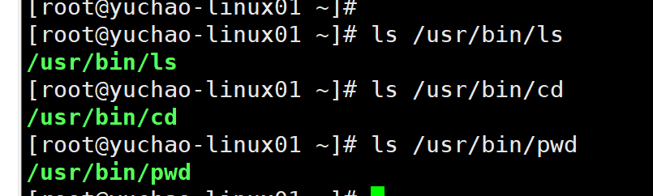
3）二进制包
二进制包，也就是源码包经过成功编译之后产生的包。
二进制包是 Linux 下默认的软件安装包，目前主要有以下 2 大主流的二进制包管理系统：
==RPM 包==管理系统：功能强大，安装、升级、査询和卸载非常简单方便，因此很多 Linux 发行版都默认使用此机制作为软件安装的管理方式，例如 Fedora、==CentOS==、SuSE 等。
- DPKG 包管理系统：由 Debian Linux 所开发的包管理机制，通过 DPKG 包，Debian Linux 就可以进行软件包管理，主要应用在 Debian 和 Ubuntu 中。
RPM包
我们可以在各个软件的官网上，找到它的rpm安装包，这就和微信，qq安装包一个概念，人家给你打包好了，你下载直接安装就好。
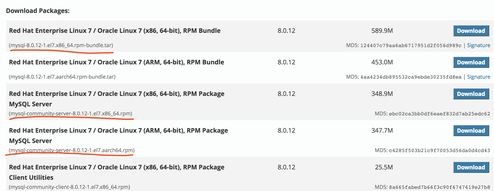
RPM是RedHat Package Manager（RedHat软件包管理工具）的缩写，是centos系统中，默认的管理应用程序的一个工具。
使用流程
1.获取rpm格式的软件包，如mysql-5.7.rpm
2.通过rpm命令，也就是linux内置的一个工具，来安装这个mysql-5.7.rpm
注意，如果你的mysql不是通过rpm包安装的，也就无法通过rpm工具管理。
rpm包管理工具，参考windows的控制面板工具理解
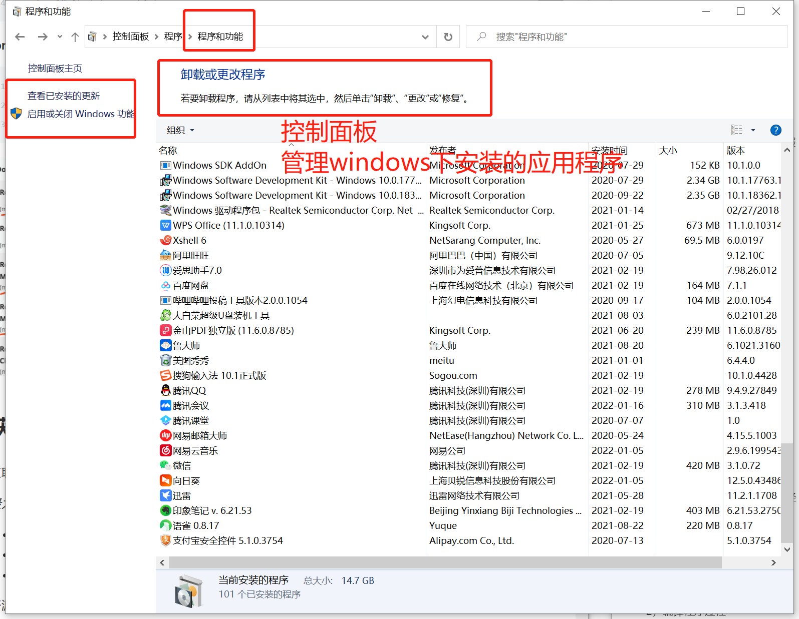
同理，windows下的这些软件，如果不是通过安装包，而是直接解压缩到某个文件夹下使用的，也无法通过控制面板去卸载。
2、如何获取rpm包
要想装软件，和windows 下一样，先得找到安装包：xxx.rpm
软件包的获得方式：
a. 去官网去下载（http://rpm.pbone.net）；
b. 不介意老版本的话，可以从光盘（或者镜像文件）中读取；（工作里，大多数离线服务器安装，也都会使用光盘镜像中提供的rpm包）
3、从光盘获取
3.1 虚拟机中加载光盘
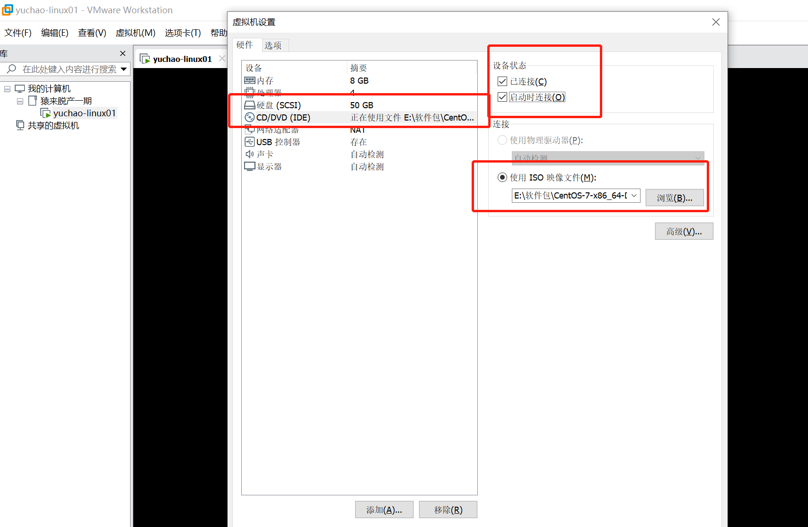
3.2 使用 # lsblk（list block devices）或者df 查看块状设备的信息
[root@yuchao-linux01 ~]#
# 查看磁盘设备
[root@yuchao-linux01 ~]# lsblk
NAME MAJ:MIN RM SIZE RO TYPE MOUNTPOINT
sda 8:0 0 50G 0 disk
├─sda1 8:1 0 1G 0 part /boot
└─sda2 8:2 0 49G 0 part
├─centos-root 253:0 0 44G 0 lvm /
└─centos-swap 253:1 0 5G 0 lvm [SWAP]
sr0 11:0 1 4.2G 0 rom
这个rom类型就是光盘设备，名字叫做sr0，4.2G镜像文件大小，目前还未挂载到linux目录中
3.3 mount挂载
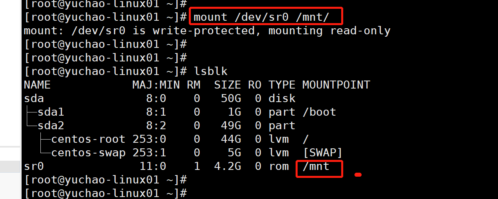
3.4 查看镜像内文件
挂载后，访问/mnt目录即可访问光盘内文件，找打rpm包
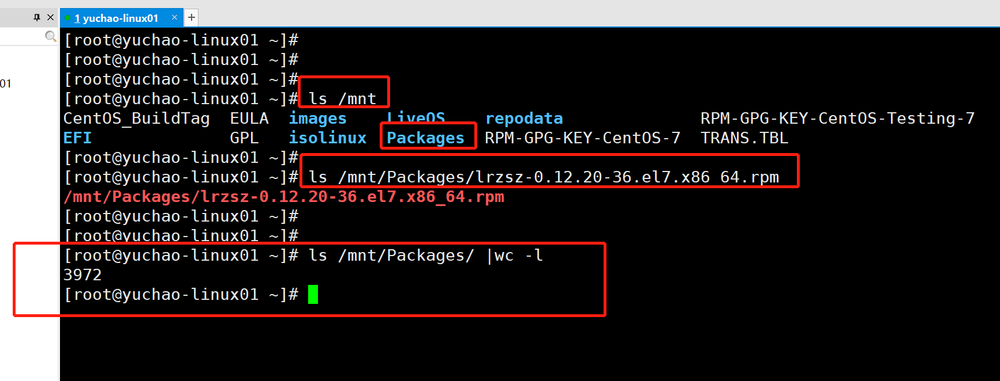
4、查询某个软件安装情况（rpm命令）
语法：# rpm -qa | grep 软件名称
选项：
-q：查询，query
-a：全部，all
-i ：显示软件包的概要信息
-v ：显示安装详细过程
-h：显示安装进度
--force ：强制操作
--nodeps：忽略依赖关系（不好用，容易出错）
windows的管理
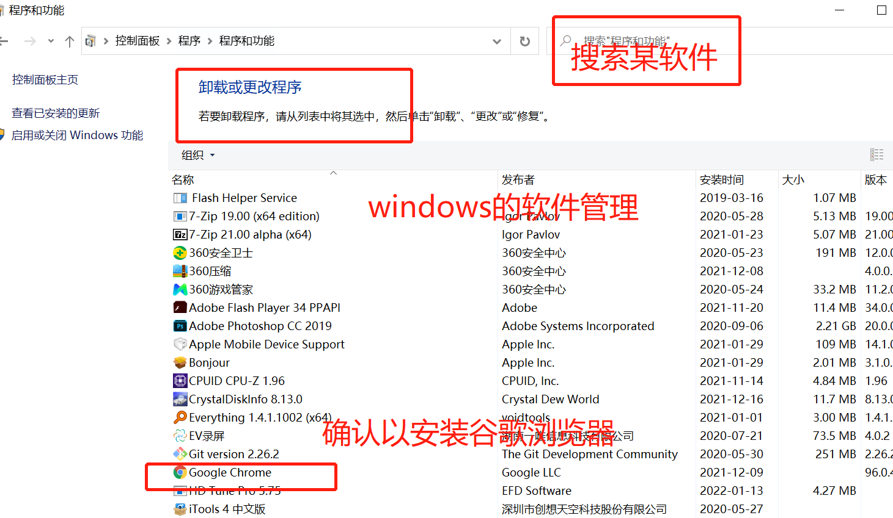
linux的软件管理
# 查询lrzsz这个工具包，有结果就是装了，否则就是没有，或者你的软件包名字错了
# lrzsz用于帮你快速拖拽，文件到linux-windows之间
# rz sz两个命令
[root@yuchao-linux01 ~]# rpm -qa lrzsz
lrzsz-0.12.20-36.el7.x86_64
# 查询火狐浏览器装没
[root@yuchao-linux01 ~]# rpm -qa firefox
firefox-52.7.0-1.el7.centos.x86_64
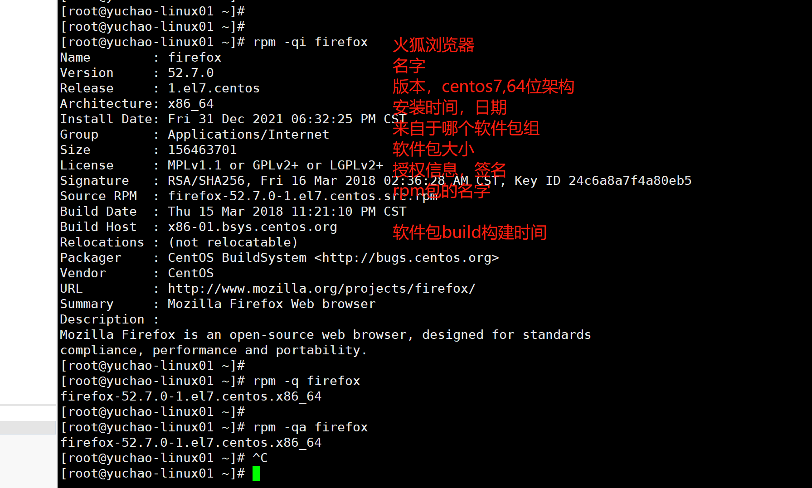
查看火狐浏览器软件（图形化）
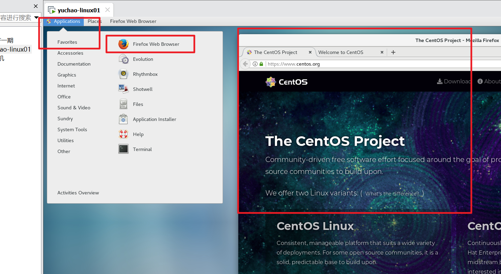
比如查询qq是否安装，rpm -qi qq
查询所有已安装的rpm软件，rpm -qa
过滤某个软件包
[root@yuchao-linux01 ~]# rpm -qa|grep bash
bash-4.2.46-30.el7.x86_64
bash-completion-2.1-6.el7.noarch
5、卸载某个软件
卸载某个软件
语法：# rpm -e 软件的名称（建议写完整的名称，通过-qa 查询）
案例：卸载火狐浏览器
rpm -qa |grep firefox 首先查询firefox软件的完整名称
[root@yuchao-linux01 ~]# rpm -qa firefox
firefox-52.7.0-1.el7.centos.x86_64
卸载
获取完整的软件包名字
[root@yuchao-linux01 ~]# rpm -e firefox-52.7.0-1.el7.centos.x86_64
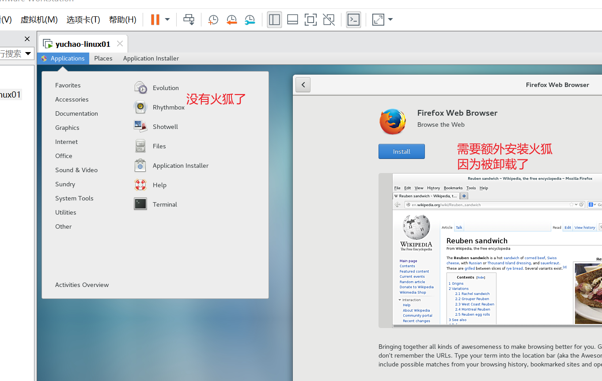
6、安装某个软件
命令：rpm
作用：管理rpm软件包
语法：# rpm -ivh 软件包完整路径名称
选项：
-i：install，安装
-v：显示进度条
-h：表示以"#"形式显示进度条
示例代码：将刚刚卸载的firefox火狐浏览器重新安装（在DVD光盘1中）
# 1.找到rpm包，可以从光盘镜像里找
[root@yuchao-linux01 ~]# ls /mnt/Packages/|grep firefox
firefox-52.7.0-1.el7.centos.x86_64.rpm
# 2.安装该rpm包
[root@yuchao-linux01 ~]# rpm -ivh /mnt/Packages/firefox-52.7.0-1.el7.centos.x86_64.rpm
Preparing... ################################# [100%]
Updating / installing...
1:firefox-52.7.0-1.el7.centos ################################# [100%]
# 3.检查
[root@yuchao-linux01 ~]# rpm -qa firefox
firefox-52.7.0-1.el7.centos.x86_64
# 4.运行firefox
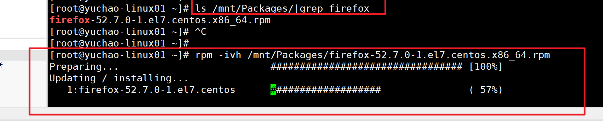
发现又可以用了
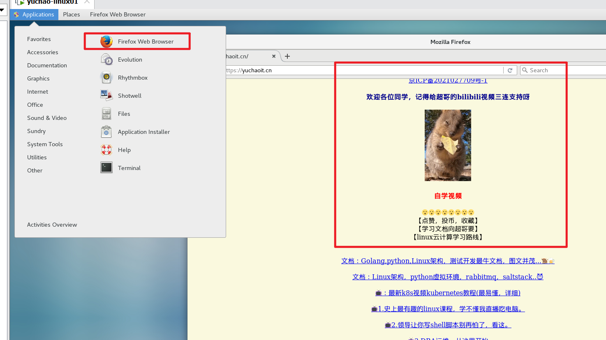
大部分基础软件，一些常见的工具，软件，都可以在系统光盘中找到rpm包
7、更新某个软件
语法：# rpm -Uvh 完整的安装包路径
选项：
-U：upgrade，升级
-v：表示显示进度条
-h：表示以#形式显示进度条
1.超哥会提供更新的firefox包
2.更新firefox，手动通过rpm升级，建议版本选小点。
3.注意，rpm包管理，会牵扯到软件依赖的处理，读新手不太友好。
# 1.获取rpm http://rpm.pbone.net/
# 2.搜索 firefox
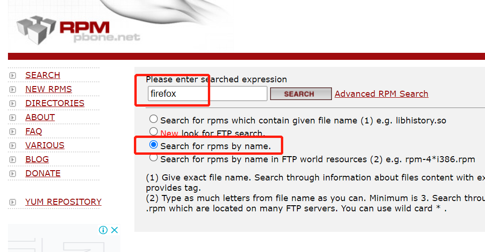
# 3.查看默认版本
[root@yuchao-linux01 ~]# rpm -qa firefox
firefox-52.7.0-1.el7.centos.x86_64
# 4.获取一个新版本，是52.7.3版本，只有一点点的升级，不会牵扯太多依赖关系
下载链接
http://ftp.pbone.net/mirror/ftp.scientificlinux.org/linux/scientific/7.2/x86_64/updates/security/firefox-52.7.3-1.el7_5.x86_64.rpm
# 5.在linux中下载
wget http://ftp.pbone.net/mirror/ftp.scientificlinux.org/linux/scientific/7.2/x86_64/updates/security/firefox-52.7.3-1.el7_5.x86_64.rpm
# 6.如果linux下载太慢，可以windows下载好，上传到linux
# 7.升级firefox软件
[root@yuchao-linux01 opt]# rpm -Uvh firefox-52.7.3-1.el7_5.x86_64.rpm
warning: firefox-52.7.3-1.el7_5.x86_64.rpm: Header V4 DSA/SHA1 Signature, key ID 192a7d7d: NOKEY
Preparing... ################################# [100%]
Updating / installing...
1:firefox-52.7.3-1.el7_5 ################################# [ 50%]
Cleaning up / removing...
2:firefox-52.7.0-1.el7.centos ################################# [100%]
[root@yuchao-linux01 opt]#
[root@yuchao-linux01 opt]# rpm -qa firefox
firefox-52.7.3-1.el7_5.x86_64
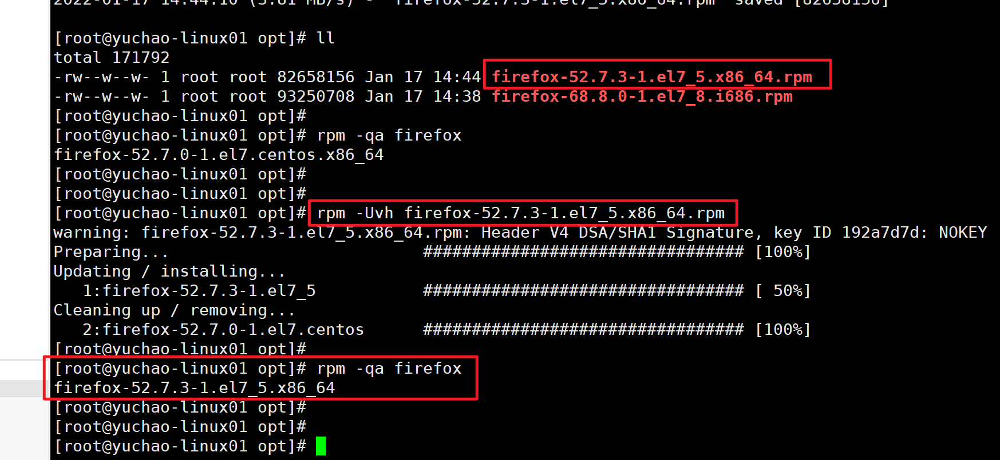
至此，就从52.7.0版本，升级到了57.7.3
这里有坑，一旦你的rpm包版本选大了，比如选了个68.5.1版本，就标识火狐浏览器又重大，很多很多的更新内容，这就牵扯到很多其他的软件，都需要升级。
rpm就无法直接升级了，需要处理完依赖关系。
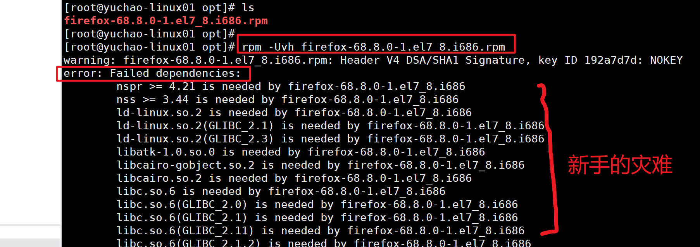
8、关于依赖处理
8.1 什么是依赖
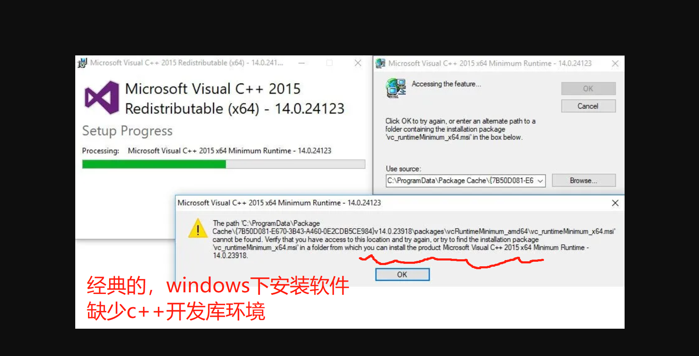
依赖指的是，软件A的运行，必须结合软件B，软件C的存在，才能够正确运行。
可以理解，一个自行车的运行，必须依赖车轮，车把，坐垫，少一个都骑不了。。。
上图是windows的依赖报错，安装依赖的软件即可。
8.2 Linux的rpm依赖图解
1.后面会讲yum工具，自动化管理rpm包
2.关于rpm包的依赖处理
yum search firefox # 搜索rpm包
yum deplist firefox # 查看依赖关系
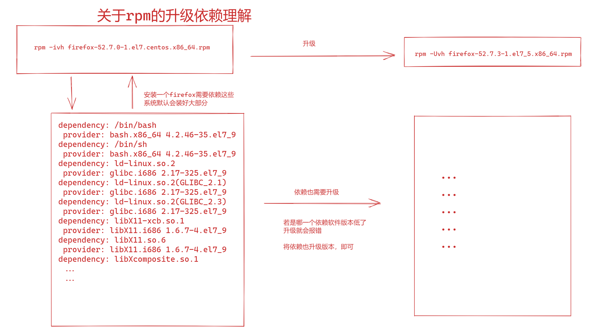
由于依赖关系较为复杂，需要搜索各个版本的rpm包，一般我们不会手动处理，都会通过yum这个神器，来批量，自动化的管理软件，管理rpm包。
8.3 查看文件所属的包名（实用）
语法：# rpm -qf 需要查询的文件路径
选项：
-f 校验所属的软件包
示例代码：查询/etc/ntp.conf 属于哪个软件包？
[root@yuchao-linux01 opt]# rpm -qf /etc/ntp.conf
ntp-4.2.6p5-28.el7.centos.x86_64
查看crontab的包信息
[root@yuchao-linux01 opt]# rpm -qf /etc/crontab
crontabs-1.11-6.20121102git.el7.noarch
查看yum，sudo工具配置文件
[root@yuchao-linux01 opt]# rpm -qf /etc/yum.conf
yum-3.4.3-158.el7.centos.noarch
[root@yuchao-linux01 opt]#
[root@yuchao-linux01 opt]# rpm -qf /etc/sudo.conf
sudo-1.8.19p2-13.el7.x86_64
8.4查询软件安装完成后，生成了哪些文件
用于查找软件安装后，默认的配置文件在哪
语法：# rpm -ql 需要查询的软件包名称
-l 显示软件包中的文件列表
rpm -ql firefox
[root@yuchao-linux01 opt]# rpm -ql firefox
搜索lrzsz软件的文件
[root@yuchao-linux01 opt]# rpm -ql lrzsz
/usr/bin/rb
/usr/bin/rx
/usr/bin/rz
/usr/bin/sb
/usr/bin/sx
/usr/bin/sz
/usr/share/locale/de/LC_MESSAGES/lrzsz.mo
/usr/share/man/man1/rz.1.gz
/usr/share/man/man1/sz.1.gz
软件安装完成后，一般会生成这几类文件
配置文件，一般默认放入/etc
程序本身的可执行命令，二进制命令，放入/usr/bin
帮助文档，/usr/share/man,/usr/share/doc
9、取消挂载
当你在使用完毕，镜像光盘后，可以取消挂载。
语法
umount 挂载点
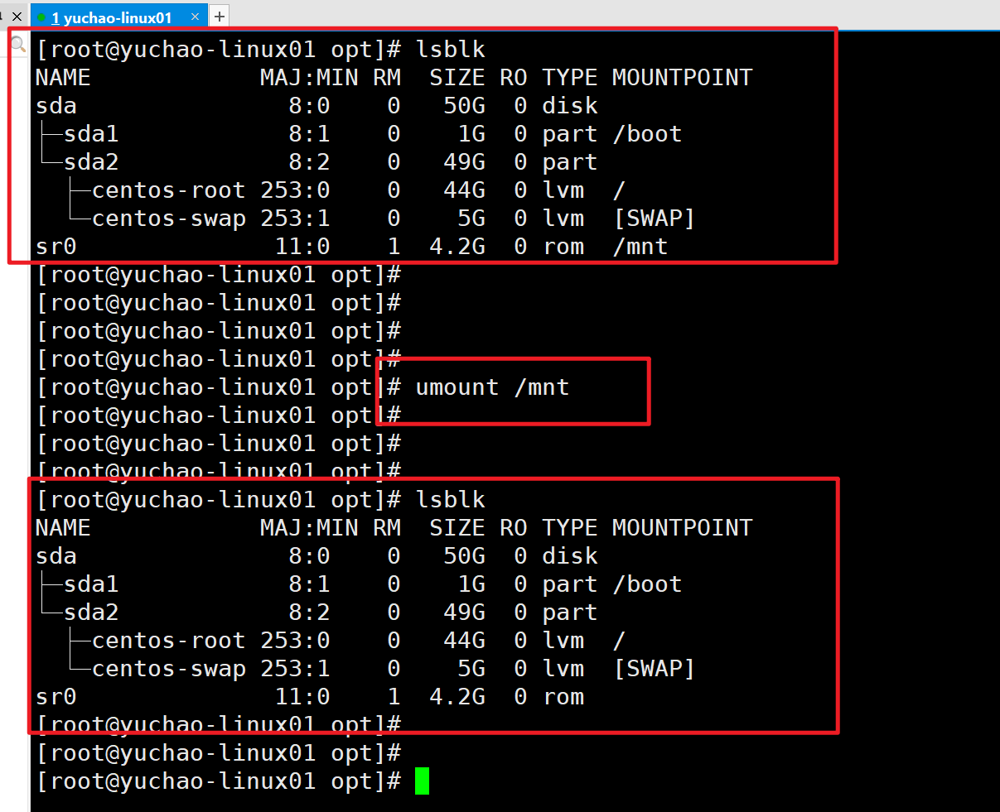
先在系统上取消挂载
再取消掉vmware光盘的连接，这好比你从台式机中的光驱，取出了光盘。
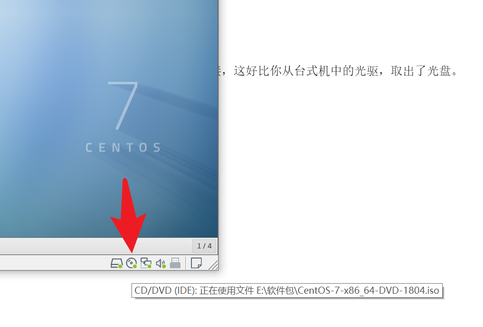